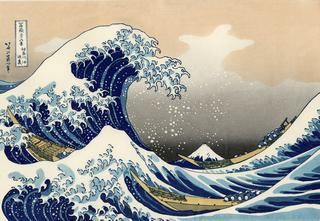

Большая волна в Канагаве
Гравюра на дереве, выполненная знаменитым японским художником Кацусикой Хокусаем в 1832 году.
Это первая гравюра из серии "Тридцать шесть видов Фудзи".
На гравюре изображена огромная волна, нависшая над лодкой близ префектуры Канагава. Гора Фудзи виднеется вдалеке и является фоном к основному действию на картине. Как и все остальные гравюры из этой серии, «Большая волна в Канагаве» представляет собой вид на гору Фудзи при определённых условиях.